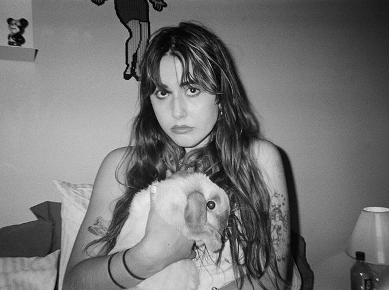

sloane dove is is a Brooklyn based creative technologist and artist studying at Parsons School of Design and Eugene Lang for a BFA in Design and Technology and a BA in Art History and Theory. A native New Mexican, Sloane grew up entranced by nature’s beauty and magical properties. Now city based, she explores the potential of nature in its interactions with art and technology.
Play my funeral game Work Home 